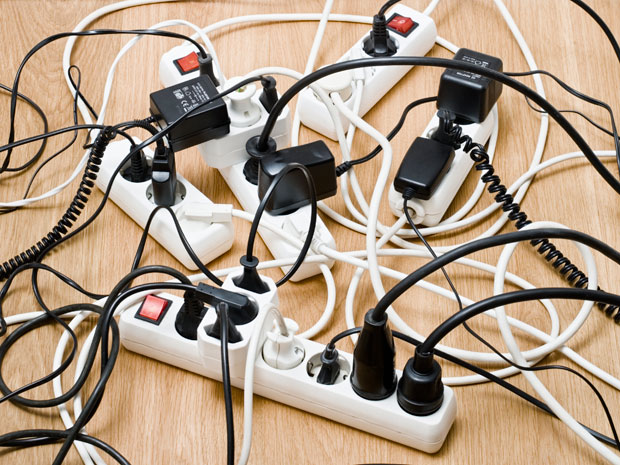

What are Electrical Hazards?
Published November 5, 2023 | by Jaspher Bagor

Electrical hazards encompass a range of potential dangers and risks that are linked to electrical systems. These hazards have the potential to cause severe injuries, including burns, electrocution, arc flash, electric shock, and other serious harm. In the most severe instances, they can even result in fires or explosions, posing a significant threat to both life and property. Consequently, it is crucial to prioritize electrical safety to ensure the overall well-being and security of a location and its occupants.
Why It's Important to Know About These Hazards
Working around electricity can be safe on the job site if workers properly identify and control hazards. However, inadequate training, lack of experience, and failure to recognize potential hazards can lead to electric shock or death.
The construction industry is particularly at risk, accounting for 52% of all electrical fatalities in the US workplace. Most of these incidents and fatalities occur due to direct worker contact with overhead power lines and contact with machines, tools, and metallic objects.
To protect against these dangers, awareness is key. Knowing the potential risks associated with electricity allows individuals to take precautions and prevent accidents and fatalities. This knowledge also enables prompt action when signs of electrical hazards are spotted, contributing to overall workplace safety.
Causes of Electrical Hazards
Electrical hazards, while dangerous, can be prevented when you’re aware of the factors that contribute to them. Here's a list of the most common causes of electrical hazards to watch out for:
- Insufficient insulation - Over time, electrical insulation can deteriorate due to wear and tear, rodents, or exposure to moisture. This degradation can lead to exposed wires and increase the risk of electric shock or short circuits.
- Circuit breaker failure - If the circuit breaker fails to trip during an overload, it loses its protective functioning, further increasing the risk of electrical hazards.
- Damaged electrical appliances - Loose connections, frayed wires, or cracked insulation can result in electrical malfunctions.
- Improper use of extension cords - Practices like daisy chaining and overloading can cause overheating and ignite electrical fires.
- Inadequate maintenance - Failing to regularly inspect electrical systems, ignoring warning signs, or bypassing safety procedures can trigger severe electrical hazards over time.
Electrical Hazards Examples
Electrocution is one of the most common hazards across construction sites according to OSHA. Identifying electrical hazards can help raise awareness of the risks, their severity, and how they can harm workers.
In this section, learn about common electrical hazards in the workplace and electrical safety tips to prevent them:
- Overhead power lines
- Damaged tools and equipment
- Inadequate wiring and overloaded circuits
- Exposed electrical parts
- Improper grounding
- Damaged insulation
- Wet conditions

Overhead Power Lines
Overhead powered and energized electrical lines have high voltages which can cause major burns and electrocution to workers. Remember to maintain a minimum distance of 10 feet from overhead power lines and nearby equipment. Conduct site surveys to ensure that nothing is stored under overhead power lines.
In addition, safety barriers and signs must be installed to warn nearby non-electrical workers of the hazards present in the area.
Damaged Tools and Equipment
Exposure to damaged electrical tools and equipment can be very dangerous. Do not fix anything unless you are qualified to do so. Thoroughly check for cracks, cuts, or abrasions on cables, wires, and cords. In case of any defects, have them repaired or replaced.
Aside from this, Lock Out Tag Out (LOTO) procedures should be performed at all times before commencing electrical maintenance and repairs. LOTO procedures are there to protect all workers on a worksite.
Inadequate Wiring and Overloaded Circuits
Using wires of inappropriate size for the current can cause overheating and electrical fires to occur. To prevent this, use the correct wire suitable for the operation and the electrical load to work on. Use the correct extension cord designed for heavy-duty use.
Make sure to not overload an outlet and use proper circuit breakers. Perform regular fire risk assessments to identify areas at risk of bad wiring and circuits.
Exposed Electrical Parts
Examples of exposed electrical parts include temporary lighting, open power distribution units, and detached insulation parts on electrical cords. These hazards can cause potential shocks and burns. Secure these items with proper guarding mechanisms and always check for any exposed parts to be repaired immediately.
Improper Grounding
The most common OSHA electrical violation is the improper grounding of equipment. Proper grounding can eliminate unwanted voltage and reduce the risk of electrocution. Never remove the metallic ground pin as it is responsible for returning unwanted voltage to the ground.
Damaged Insulation
Defective or inadequate insulation is a hazard. Be aware of damaged insulation and report it immediately. Turn off all power sources before replacing damaged insulation and never attempt to cover them with electrical tape.
Wet Conditions
Never operate electrical equipment in wet locations. Water greatly increases the risk of electrocution especially if the equipment has damaged insulation. Have a qualified electrician inspect electrical equipment that has gotten wet before energizing it.
Preventing Hazards Through Electrical Inspections
Electrical inspections are an essential preventive measure to avoid electrical hazards in the workplace. This procedure helps detect and address potential hazards, reducing the risk of electrical injuries and contributing to a safer working environment. Failure to conduct these inspections regularly can also lead to accidents caused by electric shock or even death.
So how do these inspections aid in preventing electrical hazards? Here’s a quick overview to help you get started:
- Assessing the condition of electrical equipment- During an electrical inspection, a property’s electrical equipment undergoes quality and safety checks to ensure that they are in working condition before being operated.
- Detecting electrical hazards – Regular electrical inspections allow electricians to identify faulty wiring, damaged cords, or malfunctioning equipment and carry out the necessary repairs or replacements.
- Ensuring compliance with safety codes – These inspections are conducted by electrical servicing companies to make sure that a property follows electrical safety laws and regulations.
- Evaluating electrical safety procedures – Electrical inspections provide an overall assessment of the worksite, training provided, and equipment used. These results allow you to identify and bridge any gaps in safety procedures.
- Recommending corrective actions – After completing the inspection, inspectors provide recommendations on areas for improvement based on the identified risks and noncompliances. These can range from repairs and replacements to upgrades and safety training.
10 Bad Habits that Waste Energy in Your Home
Published November 6, 2023 | by Jaspher Bagor
Doesn't it seem like everyone is becoming a little more energy conscious lately? People are trying to raise awareness and make changes for the good of the planet, future generations, and yes, their own wallets. Of course, even with the best intentions, we are all guilty of wasteful habits.
With all our energy efficient appliances and upgrades, the average American household still uses around 11,000 kWh of electricity per year. That's more than $2,200 just on electricity bills every year! As electric companies hike up their rates every year that number becomes even higher. With all that electricity use (and wallet drainage) there is plenty of room for improving everyday efficiency.
You would be surprised to discover how seemingly innocent little habits actually have a big impact on your annual energy costs. The good news is that through the magic of a little effort and self-discipline, bad habits can be swapped for good habits.
Lets take a look at the top 10 energy wasting habits along with some simple solutions to these problems.
1. Leaving the lights on.
It takes about two seconds to flip a light switch when you leave a room, but for some reason many people, myself included, tend to just leave the lights on all over the house as soon as the sun sets. If you cannot remember to turn off the lights every single time you walk out of a room, at least do a quick 2 minute walk through the house when you are leaving somewhere, especially if you will be away for more than a day.
2. Leaving electronics plugged in.
Did you know that once electronics are done charging, they continue to suck up energy. Psst: That battery is not going to fill up past 100%! You can slay these energy vampires by unplugging your appliances and electronics when they are not in use. This probably will not be convenient to do this to your cable box or router, but if you have a TV that you do not use very often, it may be a good idea to unplug it until the next time you need to turn it on. An easier alternative is to plug your devices into power strips that can be switched off - some advanced power strips even shut off idle electronics automatically.
3. Standing in front of an open fridge.
We waste around 10.4 hours a year just staring aimlessly into our refrigerators. Imagine all the cool air oozing out as you stand there opening and closing the fridge 10 times, before finally deciding to just order that pizza! Leaving a freezer open is even worse (2 min open freezer = 4 min open fridge). If you can't ditch the fridge browsing habit ─ I still do this every day ─ at least be sure not to accidentally leave the refrigerator open a crack and make sure you close the door tight. Modern appliances usually beep to warn you when this has happened.
4. Washing laundry in hot water.
Only a few types of stains and certain fabrics need that high temperature to really be clean. Most clothing will wash our just fine in a warm temperature and some types of clothing - especially dark colors - actually do better in a cold wash. Think of all that energy wasted on heating up water that could be put to better use, say for a nice hot bath. Another good tip is to wait until you have enough laundry for a full load before running your washing machine, and to air dry your laundry whenever you can.
5. Not programming the thermostat.
Did you know that your AC/heating system accounts for almost 50% of your energy usage? If you were to choose only 1 energy wasting habit to improve, this is the one. Whether you have a central system or a window unit, leaving the A/C running when you are not home wastes a lot of electricity. If you program your thermostat to adjust the temperature while you are out of the house so that your system does not need to work as hard, you can save $100 per season! Not a fan of coming home to a freezing or blazing hot house? Simply making a small adjustment in programming will make a big difference. By using a programmable thermostat, you can save around $180/year, according to EPA estimates.
6. Forgetting to change air filters.
Speaking of air conditioners and furnaces, when was the last time you changed your filter? The air filter traps dust and other air pollutants until it becomes so clogged, your systems has to work harder and harder to push air through it. You can maximize efficiency by regularly changing your filters. As a bonus, raise your hand if you prefer cleaner air?
7. Running a half-empty dishwasher.
Yes, dishwashers are convenient and actually save water when used efficiently. In this case, “efficiently” means “filled to the brim.” You will save both water as well as the energy used for the drying cycle, not to mention the energy used to heat up water if you are running your dishwasher on a high temp setting. Load your dishwasher fully before you turn it on and your wallet will be just a little happier.
8. Taking long, hot showers.
When you drag yourself out of bed on that freezing Monday morning, you may want to stay and linger under that hot shower just a little longer. Just remember, those 5 precious extra minutes will add up to 155 extra minutes each month. Now a few of us may be willing to pay a little extra for such a luxury, but most people don't mind saving a little extra cash, especially if that means 5 more minutes of sleep in the morning! You can try placing a timer inside your shower or pre-setting your water heater to a lower temperature. Taking showers that are too long will dry out your skin anyway, and cold water is actually beneficial to your skin and hair.
9. Using outdated appliances.
You may think you are saving money by not splurging on new appliances and using your old ones until they croak, but you may not take into account the potential energy savings you are missing out on. Newer, energy-efficient appliances would significantly reduce your energy usage. Think of it this way: You will recover the up-front cost of the appliance through the savings on your energy bill and enjoy the luxury of an upgrade at the same time.
10. Falling asleep with the TV on.
This one has happened to most of us. You cozy up on your couch ready for your favorite show, and before you know it, you wake up at 4am and your TV is onto the next season already. Fortunately this will only add up to a few wasted cents, but if this is your nightly ritual, you are wasting $55 a year. To remedy this, you can program your TV to turn off the screen after a few hours, or just ditch this habit completely ─ your sleep quality will improve too. It's small changes like these that make a difference in the long run.
10 Energy Saving Tips at Home to Help the Earth and Lower Your Bills
Published November 6, 2023 | by Jaspher Bagor